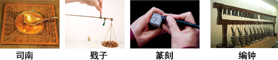

2018年北京市中考物理试题 · 选择题 第16、17、18、19、20题
16. 下列能源中，属于可再生能源的是
A. 石油 B. 风能 C. 煤炭 D. 太阳能
17. 下列说法中正确的是
A. 同种电荷相互排斥
B. 光是电磁波
C. 电荷的移动形成电流
D. 负电荷定向移动的方向就是电流的方向
18. 下列说法中正确的是
A. 组成物质的分子之间，只存在引力，不存在斥力
B. 组成物质的大量分子无规则运动的剧烈程度与温度有关
C. 晶体在熔化过程中吸收热量，温度不变
D. 沿海地区通常比内陆地区昼夜温差小，原因之一是水的比热容比砂石的比热容大
19. 图9展示了我国古代劳动人民的智慧成果，对其中所涉及的物理知识，下列说法中正确的是

A. 司南利用地磁场对磁体有力的作用来指示南北
B. 戥子利用杠杆平衡来称量质量
C. 篆刻刀的刀口做得很锋利，是为了减小压强
D. 正在发声的编钟一定在振动
20. 下列说法中正确的是
A. 电流周围存在磁场
B. 磁感线是真实存在的
C. 电动机能够把电能转化为机械能
D. 只要导体在磁场中做切割磁感线运动，就会产生感应电流